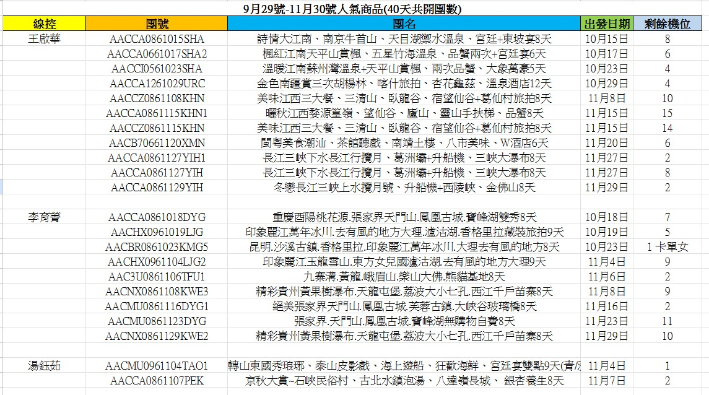

Sales Enablement · 業務精進計畫
從「報名系統」到「客戶經營」
系統 2026 年 5 月上線，已從線上報名延伸成客戶資料庫（CRM）。
單位：直客銷售部 · 報告人：李宛宜
單位：直客銷售部 · 報告人：李宛宜
01集中管理資料
02提升團隊協作
03精準分眾行銷
01 · Results
目前累積的成果
報名資料自動進入旅客主檔，持續累積可經營的客戶名單。
2026 年旅客人次
1,089人次
旅客主檔
1,007人
10 月壽星
52位
已上線功能
經營儀表板
會員分級
每月壽星名單
旅客報名來源
下次旅遊問卷
每日自動備份
數字統計至 2026/09/23。 開啟經營儀表板 ↗
02 · Data Sources
數據蒐集來源
報名時蒐集、系統自動計算，建立每位客人的完整輪廓。
基本身分
中文姓名身分證字號年齡性別居住縣市
旅客來源（必選）
電話官方 LINE@網單社群平台（Threads/IG/FB）舊客
出團紀錄
報名完成次數已出團次數待出發次數首次出發日最近出發日下次出發日
去過哪裡
常去洲別去過洲別常去目的地
由團號判斷
消費金額
累計實付最高單團實付平均單團實付團費級距
行銷問卷（選填）
下次想去（16 個線別）
中西歐南歐東歐北歐日本韓國中國東南亞南亞俄羅斯・中亞・蒙古紐澳美洲中東非洲長程線遊輪南北極
預計出發
半年內半年到一年一年以後還沒決定
另記錄：意向填答時間
會員等級
1 次：一般會員
2–3 次：銀鑽會員
4 次以上：金鑽會員
2–3 次：銀鑽會員
4 次以上：金鑽會員
業務與管理標記
主要承辦業務黑名單標記身分證待確認需健康評估（70 歲以上）
03 · Customer Lifecycle
旅客生命週期行銷
在客人旅程的每個階段，用對的方式保持聯繫。
1
報名時
收集 Email、報名來源、下次想去哪裡
2
回國後
業務主動關心，並邀請客人分享口碑行銷活動
3
推薦人氣商品
依客人去過和想去的地方推薦人氣商品
4
生日當月
簡訊寄送生日祝福，贈送生日旅遊金
未來規劃04 · Popular Products
人氣商品推薦
把線控的熱賣商品，送到最可能購買的客人手上。
現況：9/29–11/30 中國線人氣商品截圖公告在大群

推薦流程
- 1線控提供人氣商品
- ↓
- 2系統比對適合的客人
- ↓
- 3預覽確認
- ↓
- 4有 Email 的客人寄信沒有 Email 的，請業務用 LINE 聯絡
優化建議
線控改用固定格式的雲端表格提供清單：
- 與美編協作更方便
- 系統隨時讀取最新資料